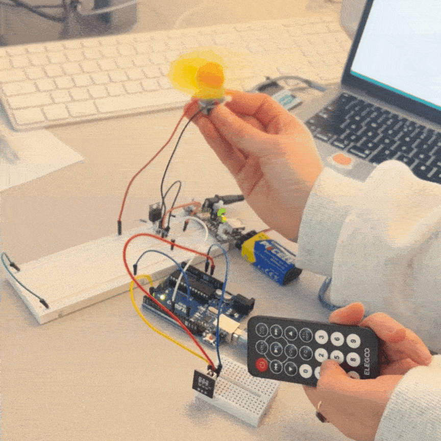

For this assignment, I built an IR remote-controlled fan using an Arduino Uno, an IR receiver, an IRLZ44N N-channel MOSFET, and a DC motor. I wanted to try a fan because I thought it would be an interesting output device to include in my circuit. The IR receiver reads commands from a remote, and Arduino uses PWM to control the motor through the MOSFET. I used a separate 9V battery and an MB-V2 power supply module set to 5V to power the motor.
I created a schematic to plan the connections between the Arduino Uno, IR receiver, MOSFET, motor, flyback diode, and external power supply. Arduino pin D9 connects to the MOSFET Gate through a 220Ω resistor. A 10kΩ pull-down resistor connects the Gate to GND. The MOSFET Drain connects to the motor's negative terminal, and the Source connects to GND. The motor's positive terminal connects to the 5V output of the MB-V2 module.
I used two resistors in my MOSFET circuit. The 220Ω resistor limits the brief charging current at the Gate, while the 10kΩ resistor helps keep the Gate LOW when the Arduino output is inactive.
I placed a 220Ω resistor between Arduino pin D9 and the MOSFET Gate. The Gate behaves like a small capacitor, so a brief current flows while it charges. Using Ohm's Law, I estimated the initial charging current, assuming 5V across the 220Ω resistor.
I = V / R
I = 5V / 220Ω
I ≈ 0.0227A = 22.7mA
This is a simplified estimate of a brief initial current, not a continuous current through the MOSFET Gate. The Arduino Uno's 40mA per-pin rating is an absolute maximum, not a recommended continuous operating current.
I placed a 10kΩ resistor between the MOSFET Gate and GND. This resistor helps keep the MOSFET off when Arduino pin D9 is inactive, including during startup. I used 10kΩ because it is a common pull-down resistor value and draws very little current.
I = V / R
I = 5V / 10,000Ω
I ≈ 0.0005A = 0.5mA
When D9 is HIGH, the two resistors form a voltage divider.
Rtotal = 220Ω + 10,000Ω = 10,220Ω
I = 5V / 10,220Ω
I ≈ 0.489mA
Vgate = 5V × 10,000 / 10,220
Vgate ≈ 4.89V
Since the MOSFET Source connects to GND, the Gate-to-Source voltage (VGS) is approximately 4.89V when D9 is fully HIGH. The motor uses a separate power supply, so the motor current does not flow through these Gate resistors.
I assembled the circuit on a breadboard using an Arduino Uno, IR receiver, IRLZ44N MOSFET, DC motor, two resistors, a 1N4007 diode, and an external power supply. The IR receiver's power pin connects to Arduino 5V, its signal pin connects to D2, and its GND pin connects to GND. The MOSFET Gate connects to D9 through the 220Ω resistor. The motor's negative terminal connects to the MOSFET Drain, and the Source connects to GND. I connected Arduino GND and MB-V2 GND to create a common ground.

I connected a 1N4007 flyback diode across the motor terminals. The striped end (cathode) connects to the motor's positive 5V terminal. The other end (anode) connects to the motor's negative terminal at the MOSFET Drain. Since a motor is an inductive load, it can create a voltage spike when current is suddenly interrupted. The diode provides a path for the inductive current and helps protect the MOSFET.
I used the IRremote library to read signals from the IR remote. The IR receiver connects to D2, and the MOSFET is controlled through D9. I used if-statements to check the remote commands and analogWrite() to send different PWM values to the motor. The code ignores repeated NEC commands and prints recognized commands to the Serial Monitor.
Button 1: Command 0x0C, PWM = 180 (Low)
Button 2: Command 0x18, PWM = 220 (Medium)
Button 3: Command 0x5E, PWM = 255 (High)
Button 0: Command 0x16, PWM = 0 (Off)
These are the PWM values programmed into the Arduino. The motor's actual response depends on the circuit and external power supply.
#include <IRremote.hpp>
// IR receiver is on pin 2
int irPin = 2;
// motor is on pin 9
int fanPin = 9;
void setup() {
// start with the motor off
digitalWrite(fanPin, LOW);
pinMode(fanPin, OUTPUT);
analogWrite(fanPin, 0);
// start serial monitor
Serial.begin(9600);
// start the IR receiver
IrReceiver.begin(irPin, ENABLE_LED_FEEDBACK);
}
void loop() {
// check if the remote sends something
if (IrReceiver.decode()) {
// only use NEC signals and ignore repeats
if (IrReceiver.decodedIRData.protocol == NEC &&
!(IrReceiver.decodedIRData.flags & IRDATA_FLAGS_IS_REPEAT)) {
int button = IrReceiver.decodedIRData.command;
Serial.print("Button: 0x");
Serial.println(button, HEX);
if (button == 0x0C) {
analogWrite(fanPin, 180);
Serial.println("Low");
} else if (button == 0x18) {
analogWrite(fanPin, 220);
Serial.println("Medium");
} else if (button == 0x5E) {
analogWrite(fanPin, 255);
Serial.println("High");
} else if (button == 0x16) {
analogWrite(fanPin, 0);
Serial.println("Off");
}
}
IrReceiver.resume();
}
}My final prototype uses an IR remote as the input and a DC motor as the output. When Arduino receives a recognized remote command, it updates the PWM value on D9. The MOSFET controls the motor using power from the external 5V supply. My code includes three PWM settings and an off command.

I used an IRLZ44N N-channel MOSFET because the motor can draw more current than an Arduino output pin should supply. Instead of powering the motor directly from Arduino pin D9, the MOSFET lets Arduino control a separate motor circuit. The Gate receives the control signal, the Drain connects to the motor's negative terminal, and the Source connects to GND.
I used analogWrite() to control the MOSFET using Pulse Width Modulation (PWM). PWM switches the MOSFET on and off quickly rather than providing a continuously changing voltage. A higher PWM value increases the duty cycle, which can increase the motor's average power and speed.
My DC motor is rated for 3–6V, so I did not connect it directly to the 9V battery. Instead, I connected the battery to the MB-V2 power supply module and set the module to 5V. This powers the motor separately from the Arduino's USB connection. I connected Arduino GND to MB-V2 GND so that the two circuits share the same voltage reference. I did not connect Arduino 5V directly to the external module's 5V output.
I used an IRLZ44N logic-level N-channel MOSFET. According to the manufacturer, its maximum Drain-to-Source voltage is 55V, and its maximum Drain current rating is 47A at 25°C under the specified rating conditions. Its maximum on-resistance is 35mΩ at a Gate-to-Source voltage of 4.5V. These are component ratings, not measurements of my motor's current.
The Gate threshold voltage is the voltage where the MOSFET starts to conduct a small current. It does not mean the MOSFET is fully turned on.
Datasheet and specifications: Infineon IRLZ44N Product Page .
I did not measure the motor's operating current directly, so I am not reporting a measured value.
I used an IRLZ44N N-channel MOSFET. Pin 2 is the Drain and pin 3 is the Source. According to the IRLZ44N datasheet, the absolute maximum continuous Drain current is 47A when the case temperature is 25°C and VGS is 10V. This is the component's maximum rating under specified conditions, not the current my motor actually draws.
Reference: IRLZ44N Datasheet, page 1 .
For this question, I drew a separate schematic using an Arduino Uno, a DC motor, an IRLZ44N MOSFET, a flyback diode, and two capacitors. Arduino D9 connects to the MOSFET Gate through a 220Ω resistor, and a 10kΩ pull-down resistor connects the Gate to GND. The motor connects between external 5V and the MOSFET Drain, while the Source connects to GND.
The flyback diode connects in parallel with the motor, with its cathode connected to the motor's positive terminal. I added a 100µF electrolytic capacitor and a 0.1µF ceramic capacitor. Both capacitors connect in parallel between external 5V and GND. The 100µF capacitor helps reduce larger power supply fluctuations, while the 0.1µF capacitor helps filter higher-frequency noise. The 100µF capacitor has a positive and negative terminal, but the ceramic capacitor does not have a polarity. Arduino GND and external power GND share a common ground.

I found the following parts and manufacturer specifications that could be used in this proposed circuit. The example motor and capacitor models are not necessarily the exact components I used in my physical prototype.
Arduino Uno R3: Arduino Uno R3 Documentation .
IRLZ44N MOSFET: Infineon IRLZ44N Datasheet .
DC Motor: Mabuchi RF-300FA Motor Datasheet .
Flyback Diode: Vishay 1N4007 Datasheet .
100µF Electrolytic Capacitor: Nichicon UVR1H101MPD, 100µF, 50V .
0.1µF Ceramic Capacitor: KEMET C315C104K5R5TA, 0.1µF, 50V .
220Ω and 10kΩ Resistors: Yageo CFR Series Resistor Datasheet .
For this question, I drew a separate schematic using an Arduino Uno, the L293D motor driver, two DC motors, and an external power supply. The L293D can control the direction of two motors independently using two H-bridge driver sections.
Pin 16 (VCC1) connects to Arduino 5V for logic power, and pin 8 (VCC2) connects to the external 5V motor supply. Pins 4, 5, 12, and 13 connect to GND. Arduino GND and external power GND are also connected together. Pins 1 and 9 are Enable pins, and I connected both to Arduino 5V to keep the two motor channels enabled.
Motor A: The motor connects between L293D pins 3 (OUT1) and 6 (OUT2). Arduino D3 connects to pin 2 (IN1), and D4 connects to pin 7 (IN2).
Motor B: The motor connects between L293D pins 11 (OUT3) and 14 (OUT4). Arduino D5 connects to pin 10 (IN3), and D6 connects to pin 15 (IN4).

The L293D includes internal clamp diodes for inductive loads. Its specified continuous output current is up to 600mA per channel. I would check the motors' current requirements before building this circuit.
Reference: Texas Instruments L293D Datasheet .
This pseudocode shows four motor movements: both forward, both backward, Motor A forward with Motor B backward, and Motor A backward with Motor B forward. It is for the proposed circuit and was not tested on a physical L293D chip.
Start
Set Arduino D3, D4, D5, and D6 as outputs
Keep both L293D Enable pins HIGH
// both motors forward
D3 = HIGH
D4 = LOW
D5 = HIGH
D6 = LOW
Wait 2 seconds
// both motors backward
D3 = LOW
D4 = HIGH
D5 = LOW
D6 = HIGH
Wait 2 seconds
// Motor A forward, Motor B backward
D3 = HIGH
D4 = LOW
D5 = LOW
D6 = HIGH
Wait 2 seconds
// Motor A backward, Motor B forward
D3 = LOW
D4 = HIGH
D5 = HIGH
D6 = LOW
Wait 2 seconds
RepeatThe actual forward and backward directions depend on how each motor's two wires are connected to the L293D outputs.
Yes, I used ChatGPT during this assignment. I used it to understand the MOSFET, motor, flyback diode, power supply module, and IRremote library, and to help with debugging and HTML documentation. My full reflection is included in Section 08.
Below are examples of prompts from our conversation and the corresponding AI responses. The prompts and responses have been translated into English and shortened for clarity.
Prompt 1: "Should I include the power supply module in my schematic?"
ChatGPT Response: "Yes, I recommend including the power supply module in your A5 schematic. You do not need to draw its internal circuit."
Prompt 2: "The two capacitors are parallel, right?"
ChatGPT Response: "You are correct. I misread the schematic. Both capacitors are connected in parallel across the same 5V and GND nodes."
The most challenging part of this assignment was getting the IR receiver and DC motor to work together. When I tested them separately, both components worked. However, the IR receiver sometimes stopped recognizing commands after the motor started spinning. The Serial Monitor showed UNKNOWN signals while Arduino was still running. I checked the wiring, common ground, MOSFET connections, flyback diode, and power supply. I also used Serial Monitor messages to test different parts of the circuit separately.
This assignment helped me understand how to use a MOSFET to control an externally powered motor, why a flyback diode is important, and how different parts of a circuit can affect each other. I also learned that debugging physical computing projects requires both code testing and hardware testing.
I used ChatGPT during this assignment, but I wanted to be more intentional about how I used it compared to my previous assignments. My goal was to rely less on AI to directly design my circuit and instead use it as a learning tool to explain unfamiliar components, review class concepts, and help me work through problems myself. I tried to use ChatGPT as a support for self-learning rather than simply asking it to complete the assignment.
My original idea was to build a small fan with a DC motor because I thought it would look interesting in my circuit. I also wanted to use an IR remote control as the input. At first, I considered a capacitive touch sensor as another possible input, but I eventually decided to use the IR receiver. I used ChatGPT to help me understand the components I was considering and refine what I needed to research.
I uploaded lecture slides from class and asked ChatGPT to explain concepts I did not fully understand, including N-channel MOSFETs, DC motors, inductors, flyback diodes, and external power supplies. I also asked it to explain these topics in simpler language and create practice questions to help me review what each component does. For example, I asked questions such as "What is a DC motor?", "What does an inductor actually do?", and "Why do we need a diode to prevent current from flowing back?" These conversations helped me understand the reasons behind the connections, instead of just copying a circuit.
ChatGPT helped me understand how the IR receiver, MOSFET, and DC motor should connect to the Arduino. I used its explanations to check my own wiring and schematic, but I built and tested the physical circuit myself. I also asked ChatGPT to check whether my schematic matched the actual circuit. One of my questions was, "Should I include the power supply module in my schematic?"
One of my biggest learning moments involved the external power supply. Originally, I thought I only needed an additional battery, so I chose a 9V battery without fully considering the motor's voltage rating. Before connecting it directly to the motor, I asked ChatGPT about the power requirements. I learned that my motor was rated for 3–6V and that connecting it directly to 9V could damage it. ChatGPT helped me understand why I needed the MB-V2 power supply module, how to select its 5V output, and why the Arduino and the external supply need to share a common ground.
The hardest part was getting the IR receiver and fan to work together. At first, I could make the motor spin, and I could read the remote commands when testing the IR receiver separately. However, when I combined them, the receiver sometimes stopped recognizing commands after the fan started spinning. I asked ChatGPT to help me narrow down the problem instead of randomly changing every wire.
ChatGPT suggested checking the MOSFET wiring, the flyback diode, common ground, the external power supply, and possible electrical interference from the motor. I used the Serial Monitor to check whether Arduino was still running and whether the IR receiver was decoding commands correctly. At one point, I saw repeated UNKNOWN signals while the fan was running. Some suggestions did not solve the problem, so I had to keep testing and checking the actual hardware. I also asked questions such as, "Do I really need to be able to turn off the fan?" to understand the assignment requirements and prioritize what still needed to work.
I used ChatGPT to help me understand the IRremote library and how to read the hexadecimal commands from my remote. It helped me check my Arduino syntax, understand how repeated IR signals are handled, and improve the comments in my code. I also used ChatGPT to edit my English grammar, review the explanations in my documentation, check references, and debug the HTML so that its format stayed consistent with my previous assignments.
Library used: Arduino-IRremote .